11-triple-energizer¶
ערוץ שלוש המבערות - שו שאו יאנג סאן ג'יאו¶
Triple Energizer Channel - Shǒu Shǎo Yáng Sān Jiāo Jīng¶
מטרות למידה¶
בסיום שיעור זה, הסטודנט יוכל:
- לתאר את מסלול ערוץ שלוש המבערות החיצוני והפנימי
- לאתר את 23 הנקודות של הערוץ (TE1-TE23)
- להסביר את תפקודי שלוש המבערות ברפואה הסינית
- לזהות פתולוגיות נפוצות ולבחור נקודות מתאימות
- ליישם שילובי נקודות קלאסיים לטיפול במצבים של שלוש המבערות
1. סקירת הערוץ¶
1.1 מידע כללי¶
| פרט | תיאור |
|---|---|
| שם סיני | (Shǒu Shǎo Yáng Sān Jiāo Jīng) |
| קיצור | TE (Triple Energizer) / SJ (San Jiao) |
| מספר נקודות | 23 |
| סוג | יאנג (Yang) |
| אלמנט | אש שרתית (Xiāng Huǒ) |
| שעות פעילות | 21:00-23:00 |
| כיוון זרימה | מקצה האצבע הטבעתית עולה אל הראש |
| זוג פנים-חוץ | קרום הלב (PC -) |
1.2 מסלול הערוץ¶
מסלול חיצוני: הערוץ מתחיל בקצה האצבע הטבעתית (TE1), עולה בין עצמות המטקרפל ה-4 וה-5 בגב היד (TE2-TE4), עובר לאורך הצד הדורסלי (חיצוני) של האמה בין הרדיוס לאולנה (TE5-TE10), עובר את הקפל האחורי של המרפק (TE10), עולה בצד הלטרלי-אחורי של הזרוע העליונה (TE11-TE14), עולה לכתף (TE14-TE15), עובר לצד הצוואר (TE16-TE17), עוטף את האוזן (TE17-TE22), ומסתיים בקצה החיצוני של הגבה (TE23).
מסלול פנימי: מהכתף, הערוץ הפנימי נכנס לפוסה העל-בריחית, יורד לחזה ומתחבר לקרום הלב (פריקרדיום). משם יורד דרך הסרעפת ומתחבר לשלושת המבערות — העליונה, האמצעית והתחתונה.
ענפים: ענף יוצא מאחורי האוזן, נכנס לאוזן, יוצא מלפני האוזן ומגיע לקצה החיצוני של הגבה (TE23), שם מתחבר לערוץ כיס המרה (GB1).
1.3 זוג פנים-חוץ¶
ערוץ שלוש המבערות (שו שאו יאנג -) הוא הערוץ החיצוני (יאנג) המזווג עם ערוץ קרום הלב (שו ג'יואה ין -), שהוא הערוץ הפנימי (ין). שניהם שייכים לאש המיניסטריאלית.
2. תפקודי שלוש המבערות (Sān Jiāo)¶
2.1 שלוש המבערות¶
שלוש המבערות הוא "איבר" ייחודי ברפואה הסינית — יש לו תפקוד אך אין לו צורה פיזית ברורה. הוא מחולק לשלוש קומות:
| מבערה | מיקום | תפקיד | איברים |
|---|---|---|---|
| עליונה | מעל הסרעפת | "כמו ערפל" — מפזרת צ'י ונוזלים | לב, ריאות, קרום הלב |
| אמצעית | בין הסרעפת לטבור | "כמו בועות רותחות" — מעכלת ומפרידה | קיבה, טחול |
| תחתונה | מתחת לטבור | "כמו תעלת ניקוז" — מפרישה ומסלקת | כליות, שלפוחית, כבד, מעיים |
2.2 תפקודים עיקריים¶
- שליטה על מעברי המים - שלוש המבערות שולטות על תנועת הנוזלים בכל הגוף, משמשות כ"מערכת ההשקיה" של הגוף.
- הובלת צ'י - שלוש המבערות הן המסלול שדרכו הצ'י המקורית (Yuán Qì) מופצת לכל הגוף.
- העברת מזון ופסולת - שלוש המבערות מנהלות את תהליך העיכול, הספיגה וההפרשה.
2.3 פתולוגיות נפוצות¶
| דפוס | סימפטומים עיקריים |
|---|---|
| חסימת מבערה עליונה | קוצר נשימה, כאב בחזה, שיעול |
| חסימת מבערה אמצעית | נפיחות, בחילות, חוסר תיאבון, עיכול איטי |
| חסימת מבערה תחתונה | בצקות, קושי במתן שתן, עצירות |
| לחות-חום בשלוש המבערות | חום, צמא, שתן כהה, גוף כבד |
| בעיות לאורך הערוץ | כאב באוזן, טינטון, חירשות, כאב בצד הראש, כאב בזרוע הלטרלית |
3. נקודות הערוץ (TE1-TE23)¶
WHO Standard Acupuncture Point Locations (WHO, CC BY-NC-SA 3.0 IGO):
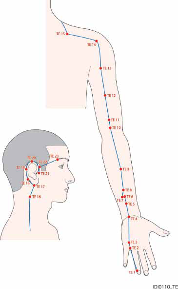
TE1 — גואן צ'ונג — Guān Chōng — "מעבר פגיעה"¶
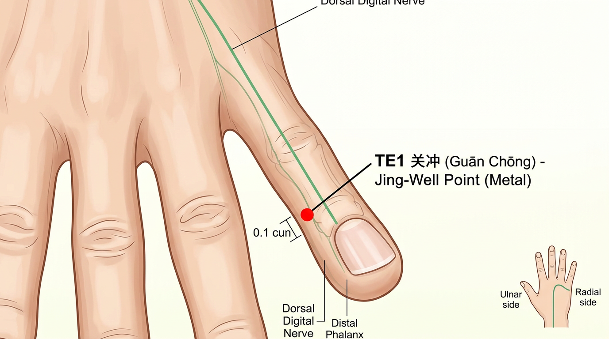
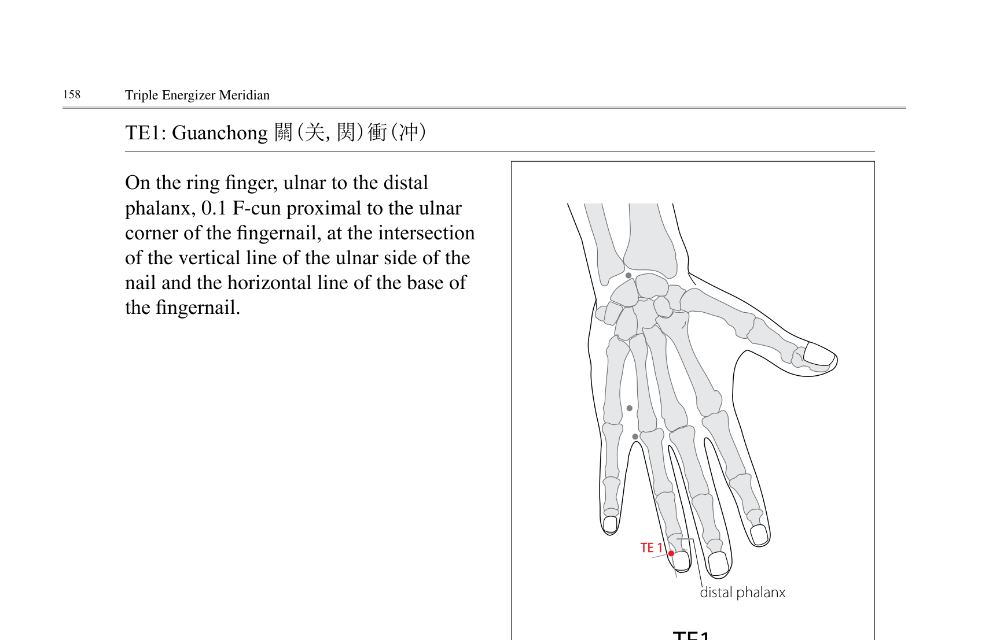
External References: AcuPoints
קטגוריה מיוחדת: נקודת ג'ינג-באר, נקודת מתכת
מיקום אנטומי: בצד האולנרי של האצבע הטבעתית, 0.1 צון פרוקסימלית לזווית הציפורן.
איך למצוא את הנקודה:
- מצאו את האצבע הטבעתית (אצבע 4)
- הנקודה בצד שפונה לאצבע הקטנה (צד אולנרי)
- 0.1 צון (כ-1 מ"מ) מאחורי זווית בסיס הציפורן
- בפינה שבין שולי הציפורן לעור
עומק דקירה: 0.1-0.2 צון (או דקירת הקזה)
זווית דקירה: ניצבת (90°) או שטוחה כלפי מעלה
תחושת דה-צ'י: כאב חד מקומי
פעולות והתוויות:
- מנקה חום, מורידה חום
- מחייה את ההכרה
- מועילה לאוזניים ולגרון
- התוויות: כאב ראש, אדמומיות בעיניים, כאב גרון, חום גבוה, כאב באוזניים, טינטון, חוסר שקט
שילובי נקודות נפוצים:
- TE1 + שאר נקודות ג'ינג-באר — להורדת חום ומצבי חירום
- TE1 + LI4 — לטיפול בכאב גרון וחום
TE2 — יה מן — Yè Mén — "שער הנוזלים"¶
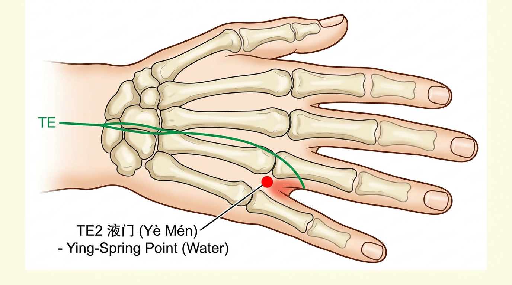
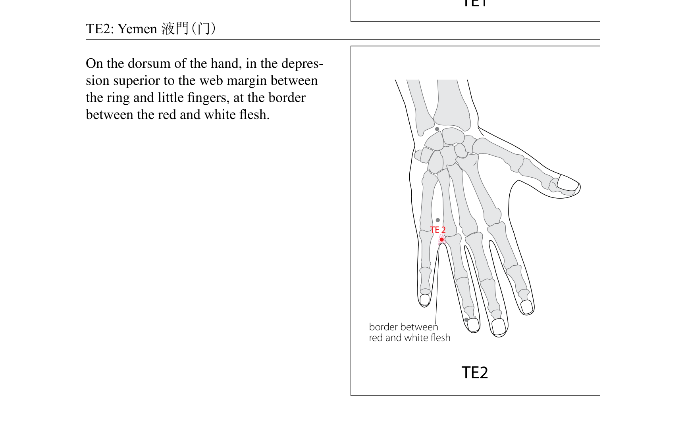
External References: AcuPoints
קטגוריה מיוחדת: נקודת יינג-מעיין, נקודת מים
מיקום אנטומי: בשקע הפרוקסימלי לקצה הקרום שבין האצבע הטבעתית לאצבע הקטנה, בגב היד.
איך למצוא את הנקודה:
- מצאו את הקרום (רשת) שבין האצבע הטבעתית לקטנה
- החליקו לכיוון הפרוקסימלי (לכיוון שורש כף היד) עד שתרגישו שקע
- הנקודה נמצאת ממש מאחורי קצה הקרום, בין עצמות המטקרפל ה-4 וה-5
- בקשו מהמטופל לקפוץ אגרוף קל — השקע ברור יותר
עומק דקירה: 0.3-0.5 צון
זווית דקירה: ניצבת (90°) או אובליקית כלפי מעלה
תחושת דה-צ'י: כאב מקומי, תחושת נפיחות בין האצבעות
פעולות והתוויות:
- מנקה חום, מועילה לאוזניים
- מווסתת צ'י של שלוש המבערות
- התוויות: כאב אוזניים, טינטון, חירשות, כאב ראש, כאב גרון, מלריה, כאב ביד
שילובי נקודות נפוצים:
- TE2 + TE3 — לטיפול בכאב אוזניים וטינטון
- TE2 + SI19 — לבעיות שמיעה
TE3 — ג'ונג ג'ו — Zhōng Zhǔ — "אי מרכזי"¶
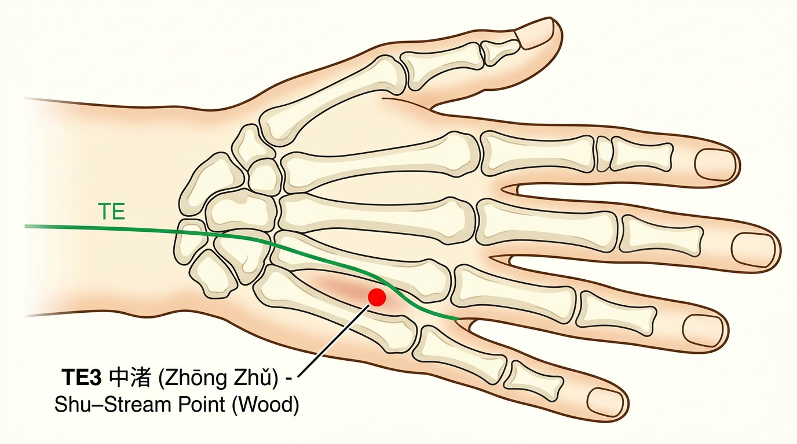
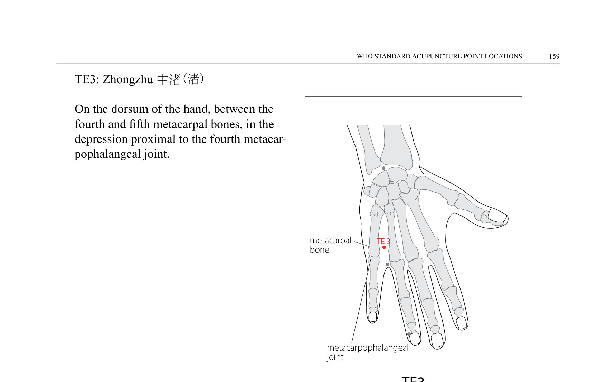
External References: AcuPoints
קטגוריה מיוחדת: נקודת שו-זרם, נקודת עץ
מיקום אנטומי: בגב היד, בשקע שבין עצמות המטקרפל ה-4 וה-5, פרוקסימלית למפרק המטקרפו-פלנגאלי ה-4.
איך למצוא את הנקודה:
- מצאו את המפרק שבבסיס האצבע הטבעתית (MCP ה-4)
- החליקו פרוקסימלית (לכיוון שורש כף היד) כ-1 צון
- הנקודה נמצאת בשקע שבין עצמות המטקרפל ה-4 וה-5
- בקשו מהמטופל לקפוץ אגרוף — השקע בולט
עומק דקירה: 0.5-0.8 צון
זווית דקירה: ניצבת (90°)
תחושת דה-צ'י: כאב מקומי, תחושת נפיחות או נימול המתפשטים לאצבעות
פעולות והתוויות:
- מנקה חום, מועילה לאוזניים ולעיניים
- מפזרת רוח-חום
- מפעילה את הערוץ ומשחררת כאב
- התוויות: כאב אוזניים, טינטון, חירשות, כאב ראש, כאב גרון, חום, כאב בזרוע וביד, כאב בכתף
שילובי נקודות נפוצים:
- TE3 + GB41 — פתיחת דאי מאי — לטיפול בכאבי צד, בעיות אוזניים, כאב ראש צידי
- TE3 + TE5 — לכאב בזרוע ובכתף
- TE3 + SI19 + GB2 — לטיפול בטינטון וחירשות
TE4 — יאנג צ'י — Yáng Chí — "בריכת היאנג"¶
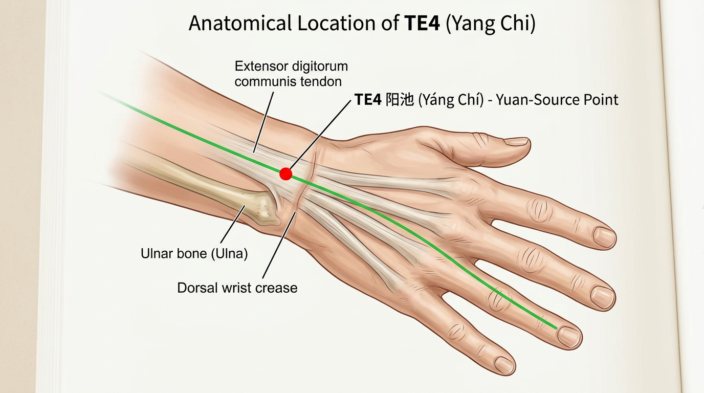
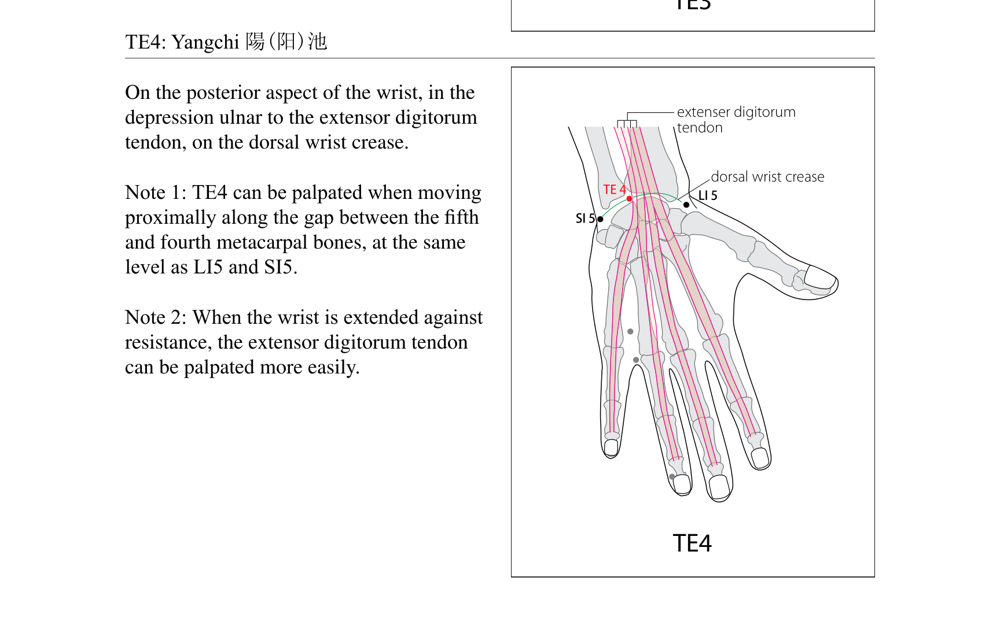
External References: AcuPoints
קטגוריה מיוחדת: נקודת יואן-מקור
מיקום אנטומי: בגב שורש כף היד (דורסלי), בשקע שעל קפל שורש כף היד, בצד האולנרי לגיד שריר האקסטנסור דיגיטורום קומוניס.
איך למצוא את הנקודה:
- מצאו את קפל שורש כף היד בצד הדורסלי (גב היד)
- זהו את הגידים המיישרים את האצבעות (אקסטנסור דיגיטורום)
- הנקודה נמצאת בשקע שבצד האולנרי (צד קטנה) לגידים אלו
- ממש על קפל שורש כף היד
- בקשו מהמטופל להרחיב את האצבעות — הגידים בולטים
עומק דקירה: 0.3-0.5 צון
זווית דקירה: ניצבת (90°)
תחושת דה-צ'י: כאב מקומי, תחושת נפיחות בשורש כף היד
פעולות והתוויות:
- מחזקת את צ'י המקור דרך שלוש המבערות
- מפזרת רוח-חום
- משחררת את שורש כף היד
- התוויות: כאב בשורש כף היד, כאב בכתף ובזרוע, חירשות, מלריה, צמא, כאב גרון
שילובי נקודות נפוצים:
- TE4 + PC7 — חיבור יואן-יואן בין ערוצים מזווגים (כאב שורש כף היד)
- TE4 + LI4 — לכאב בגפה העליונה
TE5 — וואי גואן — Wài Guān — "מעבר חיצוני"¶
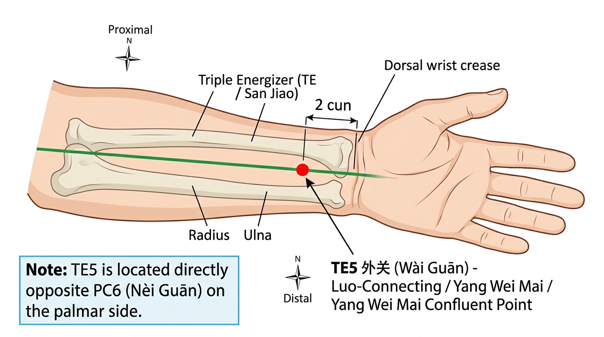
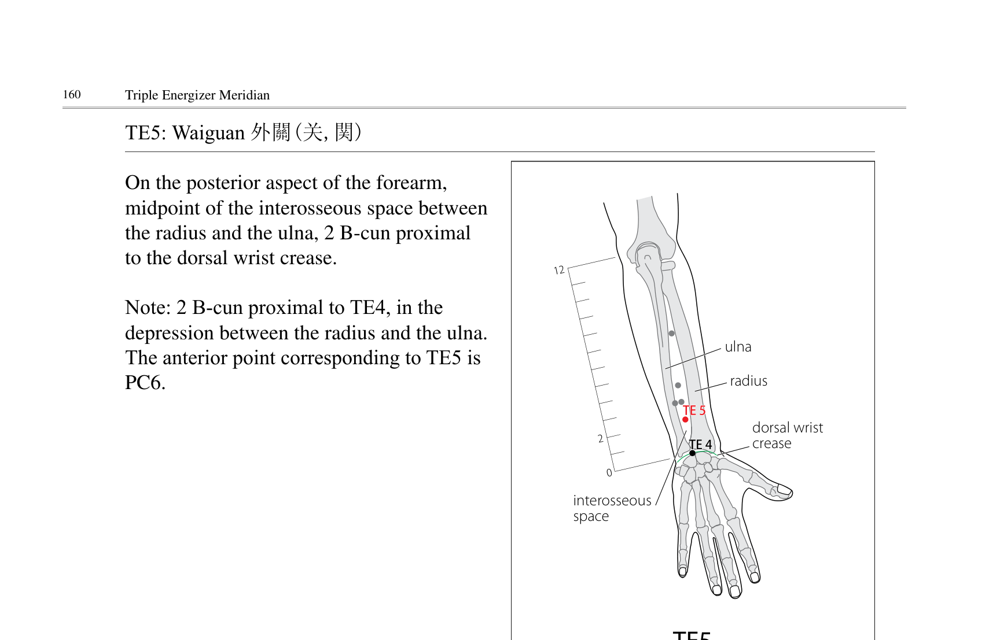
External References: AcuPoints
קטגוריה מיוחדת: נקודת לואו-מחברת, אחת מ-8 נקודות המפגש — מחוברת ליאנג ווי מאי
מיקום אנטומי: 2 צון מעל קפל שורש כף היד הדורסלי, בין עצם הרדיוס לאולנה.
איך למצוא את הנקודה:
- מצאו את קפל שורש כף היד בגב היד
- מדדו 2 צון כלפי מעלה (לכיוון המרפק)
- הנקודה נמצאת בין שתי עצמות האמה (רדיוס ואולנה)
- היא ממוקמת בדיוק מול PC6 (שנמצאת בצד הפנימי של האמה)
עומק דקירה: 0.5-1 צון
זווית דקירה: ניצבת (90°)
תחושת דה-צ'י: כאב מקומי, תחושת נימול או חשמל המתפשטים לאצבעות או עולים לכיוון המרפק
פעולות והתוויות:
- מפזרת רוח-חום, משחררת את החיצוני
- מנקה חום, מורידה חום
- מפעילה את יאנג ווי מאי
- משחררת כאב לאורך הערוץ
- מועילה לאוזניים
- התוויות: חום, כאב ראש, כאב באוזניים, טינטון, חירשות, כאב בצד הראש, כאב בעיניים, כאב בזרוע וביד, כאב בצלעות, עצירות
שילובי נקודות נפוצים:
- TE5 + GB41 — פתיחת דאי מאי + יאנג ווי מאי — לכאבי צד, אוזניים, כאב ראש
- TE5 + PC6 — חיבור לואו-יואן; כאב בחזה ובזרוע, חום
- TE5 + LI4 — לפיזור רוח-חום (הצטננות חמה)
- TE5 + GB20 — לכאב ראש ונוקשות צוואר
TE6 — ג'י גו — Zhī Gōu — "חפיר ענפים"¶
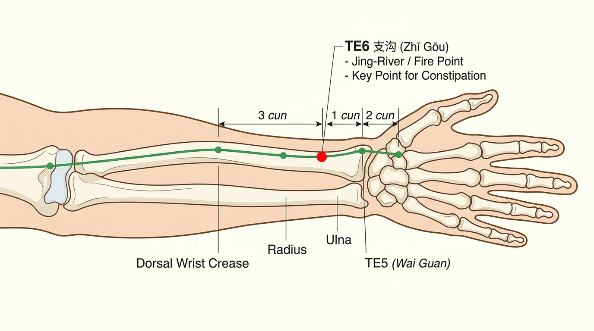
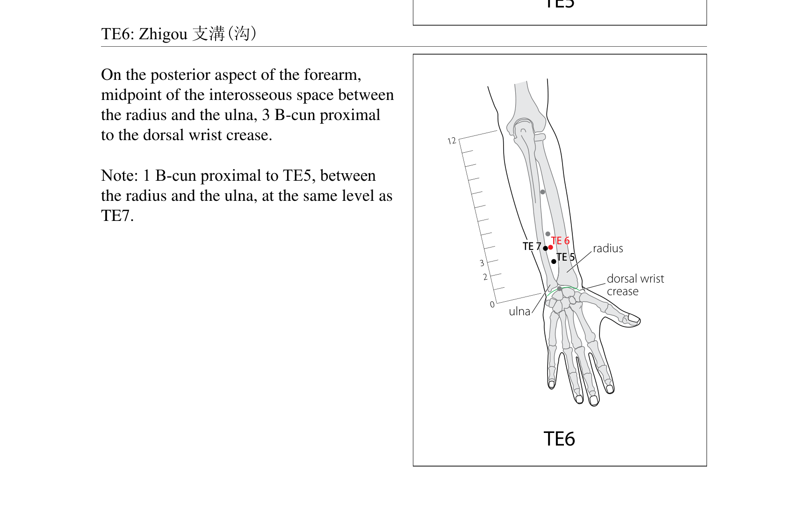
External References: AcuPoints
קטגוריה מיוחדת: נקודת ג'ינג-נהר, נקודת אש
מיקום אנטומי: 3 צון מעל קפל שורש כף היד הדורסלי, בין עצם הרדיוס לאולנה.
איך למצוא את הנקודה:
- מצאו את TE5 (2 צון מעל קפל שורש כף היד)
- מדדו 1 צון נוסף כלפי מעלה
- הנקודה נמצאת בין שתי עצמות האמה
- 1 צון מעל TE5
עומק דקירה: 0.5-1 צון
זווית דקירה: ניצבת (90°)
תחושת דה-צ'י: כאב מקומי, תחושת כבדות או נימול
פעולות והתוויות:
- מווסתת צ'י, מפזרת סטגנציה
- מנקה חום, מלחלחת את המעיים
- מועילה לצלעות (כאב בין-צלעי)
- נקודה עיקרית לטיפול בעצירות
- התוויות: עצירות (חום או סטגנציה), כאב בצלעות, כאב בחזה הצידי, חום, הקאות, כאב בזרוע, שלבקת חוגרת
שילובי נקודות נפוצים:
- TE6 + ST25 + ST37 — לטיפול בעצירות
- TE6 + GB34 — לכאב בין-צלעי
- TE6 + LR3 — לפיזור סטגנציית צ'י הכבד
TE7 — הוי צונג — Huì Zōng — "מפגש שושלות"¶
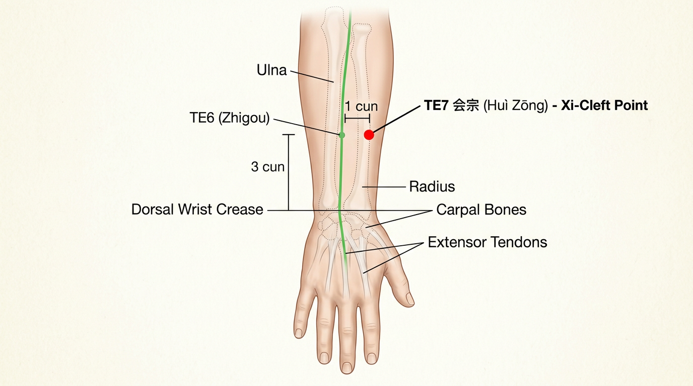
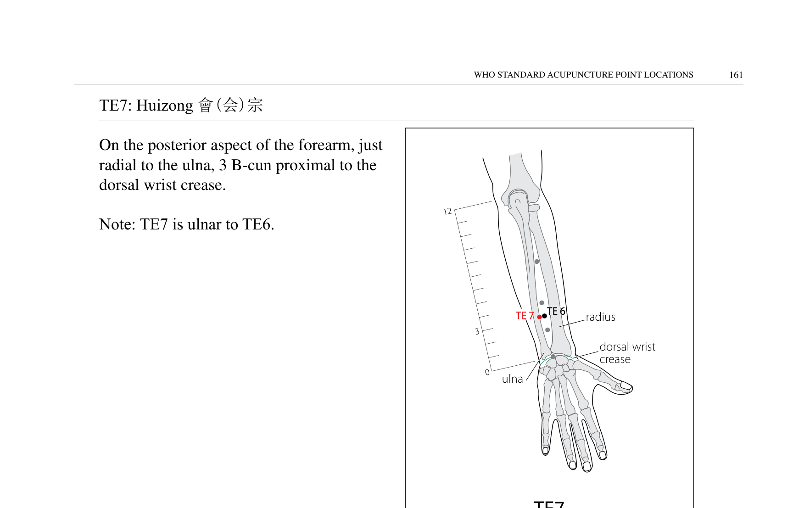
External References: AcuPoints
קטגוריה מיוחדת: נקודת שי-צבירה
מיקום אנטומי: 3 צון מעל קפל שורש כף היד הדורסלי, על הצד האולנרי של עצם האולנה (1 צון אולנרית ל-TE6).
איך למצוא את הנקודה:
- מצאו תחילה את TE6 (3 צון מעל שורש כף היד, בין רדיוס לאולנה)
- החליקו 1 צון לכיוון האולנרי (צד האצבע הקטנה)
- הנקודה נמצאת על הצד הרדיאלי של עצם האולנה
- מורגשת כנקודה רגישה על שפת העצם
עומק דקירה: 0.5-1 צון
זווית דקירה: ניצבת (90°)
תחושת דה-צ'י: כאב מקומי חד
פעולות והתוויות:
- מועילה לאוזניים (נקודה חשובה לחירשות)
- משחררת כאב לאורך הערוץ
- התוויות: חירשות, כאב באוזניים, אפילפסיה, כאב בזרוע
שילובי נקודות נפוצים:
- TE7 + SI19 — לטיפול בחירשות
- TE7 + TE3 — לבעיות אוזניים
TE8 — סאן יאנג לואו — Sān Yáng Luò — "חיבור שלושת היאנג"¶
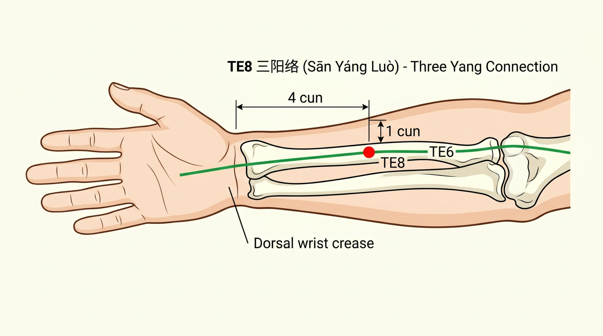
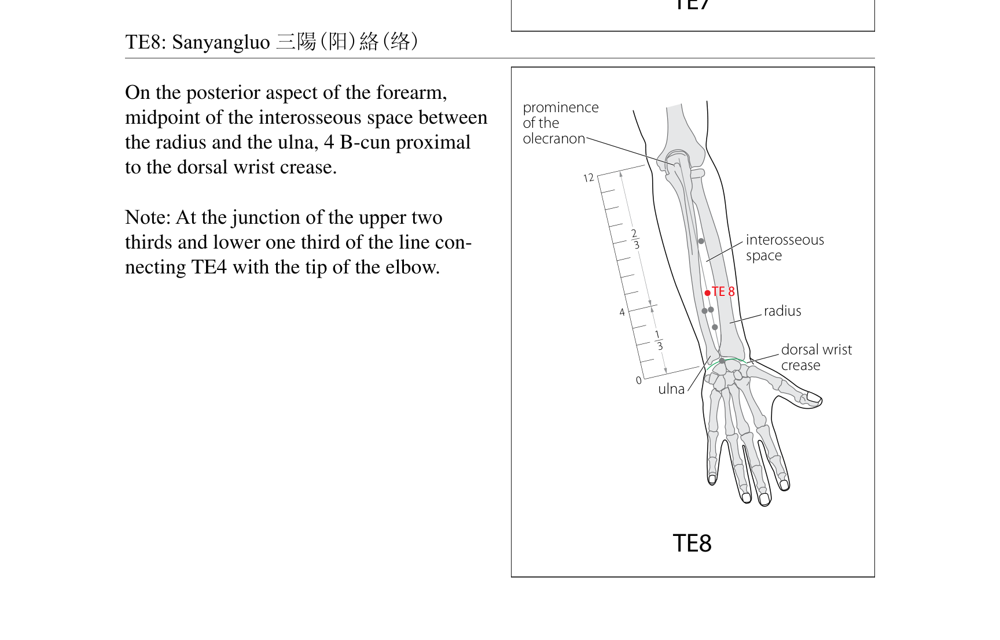
External References: AcuPoints
מיקום אנטומי: 4 צון מעל קפל שורש כף היד הדורסלי, בין עצם הרדיוס לאולנה.
איך למצוא את הנקודה:
- מצאו את TE5 (2 צון מעל שורש כף היד)
- מדדו 2 צון נוספים כלפי מעלה (סה"כ 4 צון מהקפל)
- הנקודה נמצאת בין שתי עצמות האמה
- 1 צון מעל TE6
עומק דקירה: 0.5-1 צון
זווית דקירה: ניצבת (90°)
תחושת דה-צ'י: כאב מקומי, תחושת כבדות באמה
פעולות והתוויות:
- מפתחת את חושי הראש (פותחת סתימות בחושים)
- משחררת כאב בזרוע
- התוויות: חירשות ואילמות פתאומית, כאב בזרוע, כאב שיניים
שילובי נקודות נפוצים:
- TE8 + SI19 + TE7 — לחירשות
- TE8 + LI4 — לכאב שיניים
TE9 — סי דו — Sì Dú — "ארבע תעלות"¶
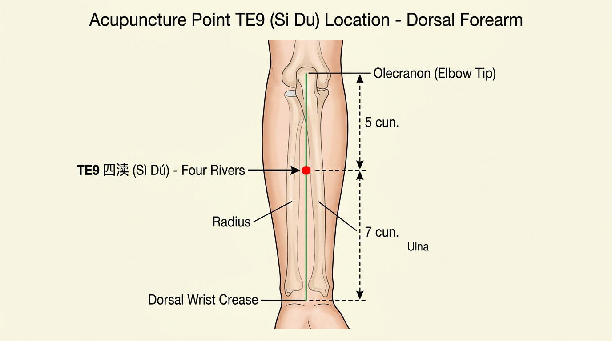
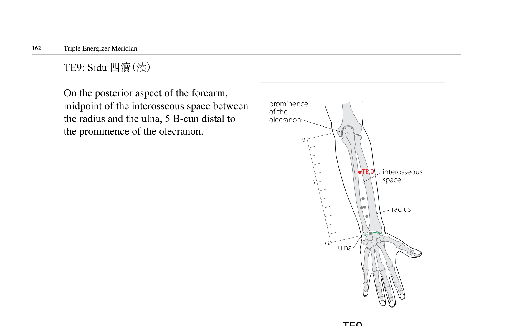
External References: AcuPoints
מיקום אנטומי: 5 צון מתחת לאולקרנון (קצה המרפק), בין עצם הרדיוס לאולנה, על הצד הדורסלי של האמה.
איך למצוא את הנקודה:
- מצאו את קצה המרפק (אולקרנון)
- מדדו 5 צון כלפי מטה לכיוון שורש כף היד
- הנקודה נמצאת בין שתי עצמות האמה
- או: 7 צון מעל קפל שורש כף היד
עומק דקירה: 0.5-1 צון
זווית דקירה: ניצבת (90°)
תחושת דה-צ'י: כאב מקומי, תחושת כבדות
פעולות והתוויות:
- מועילה לאוזניים, פותחת סתימות
- משחררת כאב בזרוע
- התוויות: חירשות, כאב גרון, כאב בזרוע, שיתוק בזרוע, כאב שיניים
שילובי נקודות נפוצים:
- TE9 + TE5 — לכאב באמה
- TE9 + SI19 — לבעיות שמיעה
TE10 — טיאן ג'ינג — Tiān Jǐng — "באר שמימית"¶
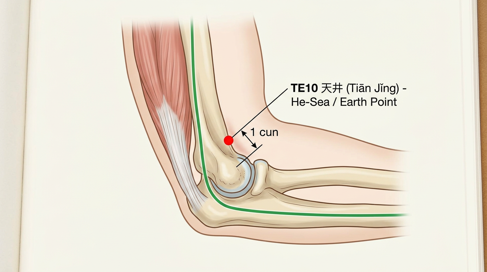
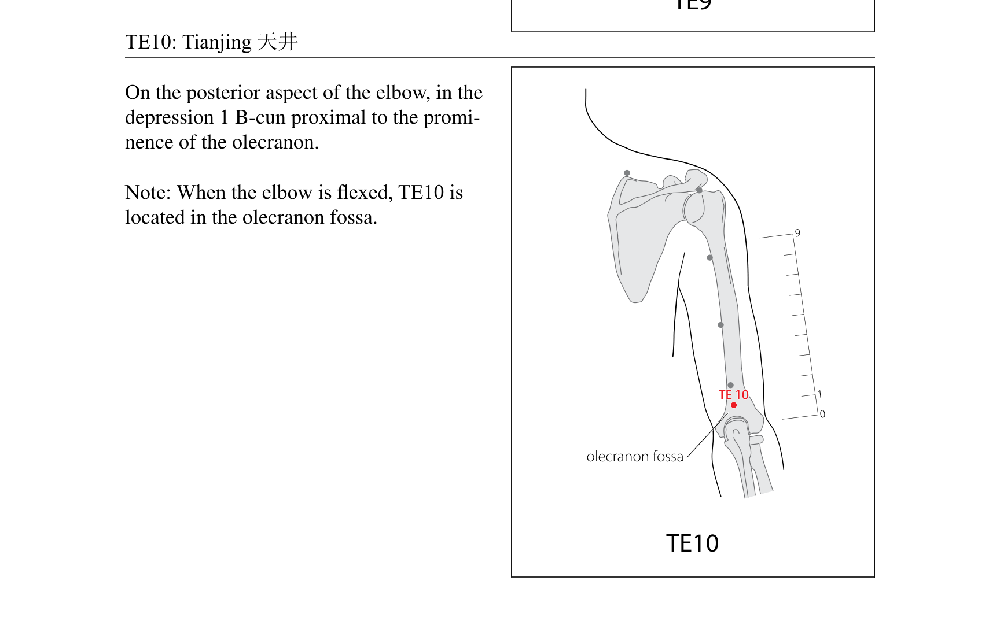
External References: AcuPoints
קטגוריה מיוחדת: נקודת הא-ים, נקודת אדמה
מיקום אנטומי: בשקע שמעל קצה האולקרנון (קצה המרפק), 1 צון מעל האולקרנון כאשר המרפק מכופף.
איך למצוא את הנקודה:
- כופפו את מרפק המטופל ב-90°
- מצאו את קצה האולקרנון (הבליטה של המרפק)
- מדדו 1 צון מעל האולקרנון, בשקע שנוצר
- הנקודה נמצאת בשקע שמעל הבליטה כאשר המרפק מכופף
עומק דקירה: 0.5-1 צון
זווית דקירה: ניצבת (90°)
תחושת דה-צ'י: כאב מקומי, תחושת כבדות סביב המרפק
פעולות והתוויות:
- מווסתת צ'י, מפזרת פליגמה וגושים
- מנקה חום ולחות
- משחררת כאב במרפק
- מרגיעה את הרוח
- התוויות: כאב במרפק, כאב בכתף ובזרוע, בלוטות לימפה נפוחות (סקרופולה), גויטר, אפילפסיה, דיכאון, כאב בצלעות
שילובי נקודות נפוצים:
- TE10 + LI11 — לכאב במרפק
- TE10 + SP9 — לפיזור לחות ופליגמה
- TE10 + GB34 — לכאב בצלעות
TE11 — צ'ינג לנג יואן — Qīng Lěng Yuān — "תהום צלולה וקרה"¶
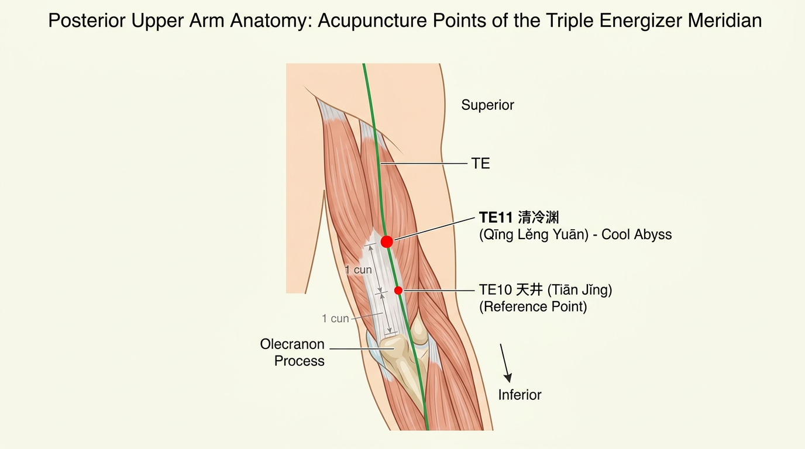
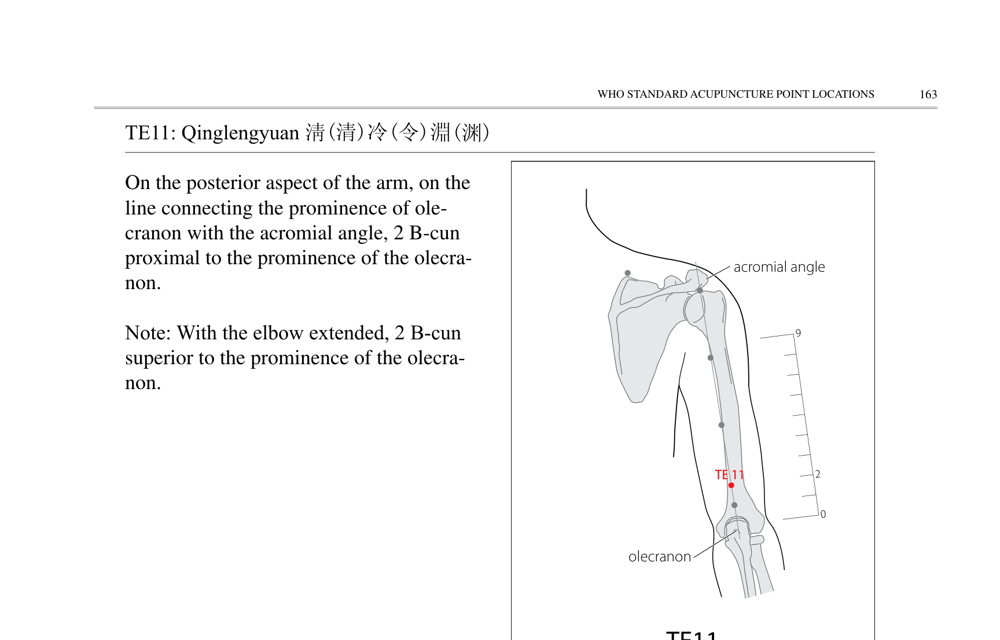
External References: AcuPoints
מיקום אנטומי: 1 צון מעל TE10, 2 צון מעל האולקרנון, על הצד הלטרלי של הזרוע.
איך למצוא את הנקודה:
- מצאו את TE10 (1 צון מעל האולקרנון)
- מדדו 1 צון נוסף כלפי מעלה
- הנקודה נמצאת על הצד הלטרלי-אחורי של הזרוע העליונה
עומק דקירה: 0.5-1 צון
זווית דקירה: ניצבת (90°)
תחושת דה-צ'י: כאב מקומי
פעולות והתוויות:
- מפעילה את הערוץ ומשחררת כאב
- התוויות: כאב בכתף ובזרוע, כאב ראש, עיניים צהובות
שילובי נקודות נפוצים:
- TE11 + TE10 — לכאב במרפק ובזרוע
TE12 — שיאו לואו — Xiāo Luò — "התכה מתפזרת"¶
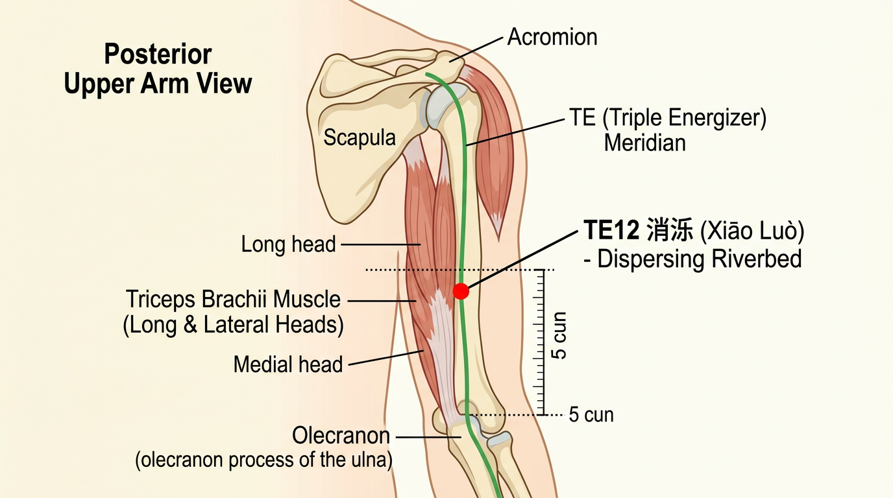
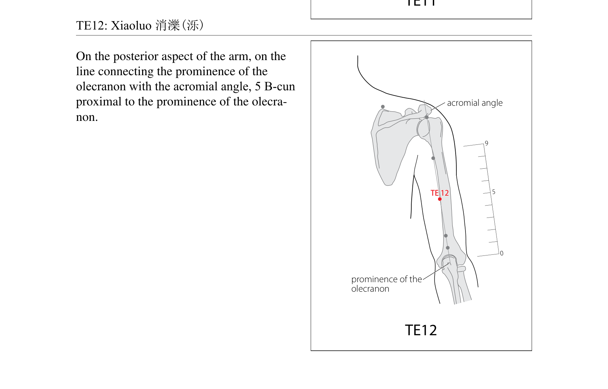
External References: AcuPoints
מיקום אנטומי: 5 צון מעל האולקרנון, באמצע הצד האחורי של הזרוע העליונה, בין ראשי שריר הטריצפס.
איך למצוא את הנקודה:
- מצאו את המרחק בין האולקרנון לקצה האחורי של האקרומיון
- הנקודה נמצאת באמצע הקו הזה
- או: 5 צון מעל האולקרנון
- ממוקמת באמצע שריר הטריצפס, בין ראשיו
עומק דקירה: 0.5-1 צון
זווית דקירה: ניצבת (90°)
תחושת דה-צ'י: כאב מקומי, תחושת כבדות בזרוע
פעולות והתוויות:
- מפעילה את הערוץ ומשחררת כאב
- מנקה חום
- התוויות: כאב בזרוע ובכתף, כאב ראש, נוקשות צוואר, כאב שיניים
שילובי נקודות נפוצים:
- TE12 + LI15 — לכאב בזרוע העליונה ובכתף
TE13 — נאו הוי — Nào Huì — "מפגש הזרוע"¶
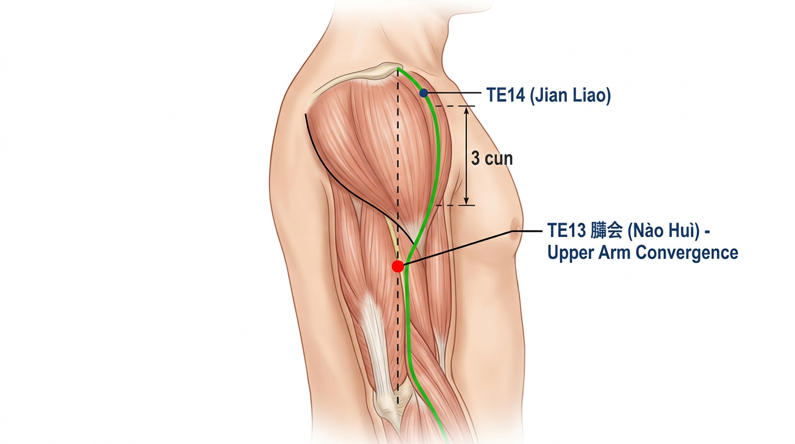
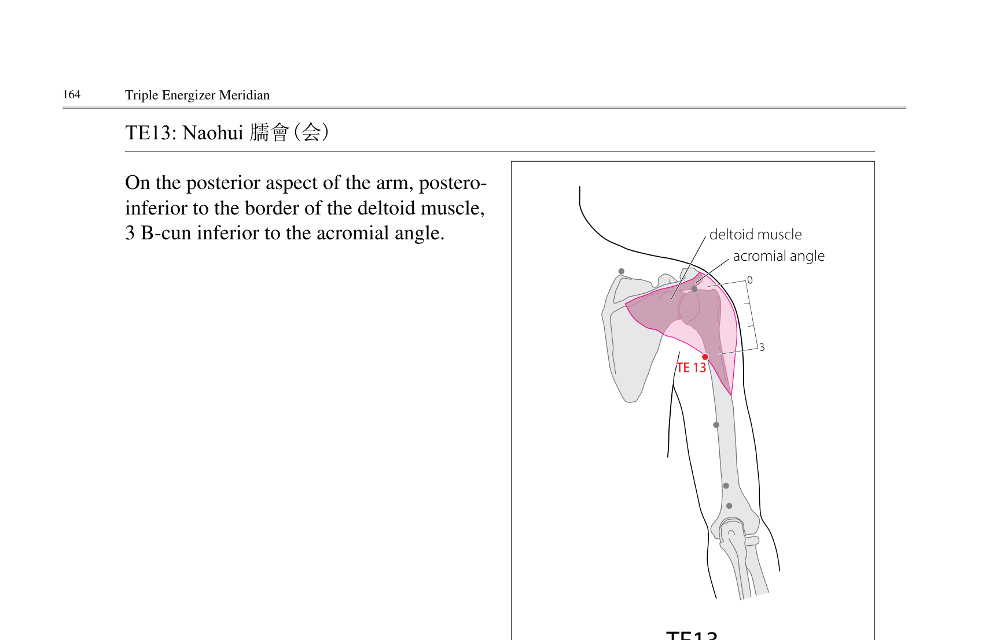
External References: AcuPoints
מיקום אנטומי: 3 צון מתחת לאחורי הדלטויד, על הקו שבין האולקרנון לקצה הכתף, על השפה האחורית של שריר הדלטויד.
איך למצוא את הנקודה:
- מצאו את השפה האחורית (פוסטריורית) של שריר הדלטויד
- מדדו 3 צון כלפי מטה מנקודת הכתף (TE14)
- הנקודה נמצאת על השפה הפוסטריורית-אינפריורית של הדלטויד
- על המשטח הלטרלי של הזרוע העליונה
עומק דקירה: 0.5-1 צון
זווית דקירה: ניצבת (90°)
תחושת דה-צ'י: כאב מקומי, תחושת כבדות
פעולות והתוויות:
- מפעילה את הערוץ ומשחררת כאב
- מפזרת פליגמה וגושים
- התוויות: כאב בכתף ובזרוע, גויטר, בלוטות לימפה נפוחות
שילובי נקודות נפוצים:
- TE13 + TE14 — לכאב בכתף
- TE13 + SI10 — לכאב בזרוע העליונה
TE14 — ג'יאן ליאו — Jiān Liáo — "שקע הכתף"¶
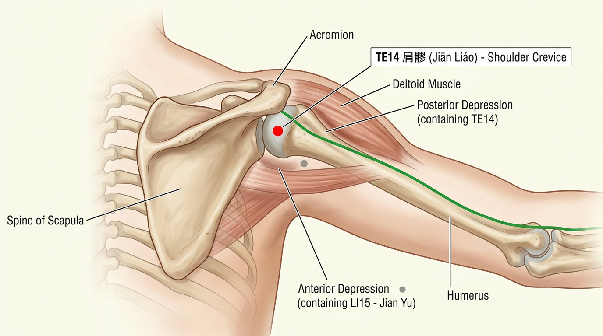
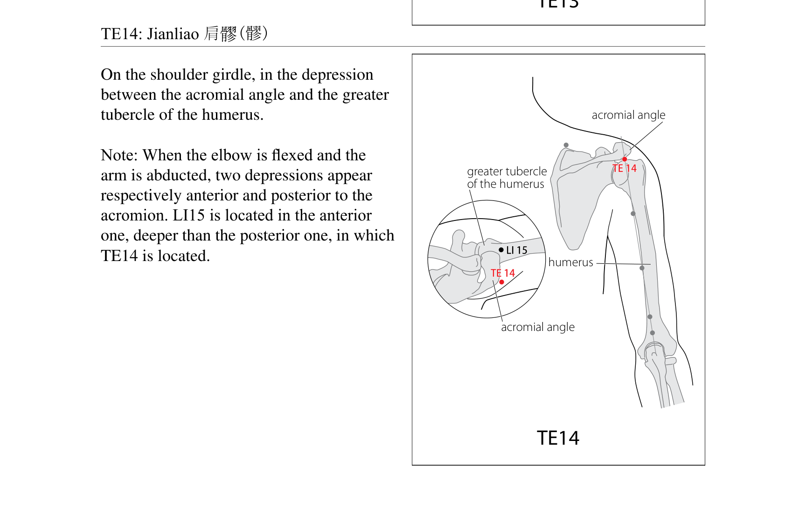
External References: AcuPoints
מיקום אנטומי: בשקע שמאחורי ומטה לאקרומיון, כאשר הזרוע מורמת (abducted), בשקע האחורי מבין שני השקעים שנוצרים.
איך למצוא את הנקודה:
- בקשו מהמטופל להרים את הזרוע הצידה (אבדוקציה) ב-90°
- שני שקעים נוצרים באזור הכתף — קדמי ואחורי
- הנקודה נמצאת בשקע האחורי (posterior depression)
- מאחורי ומתחת לאקרומיון
- כאשר הזרוע מורדת, השקע נעלם
עומק דקירה: 1-1.5 צון
זווית דקירה: ניצבת או אובליקית כלפי מטה
תחושת דה-צ'י: כאב מקומי, תחושת כבדות בכתף, לעיתים הקרנה לזרוע
פעולות והתוויות:
- מפעילה את הערוץ ומשחררת כאב בכתף
- מפזרת רוח ולחות מהמפרק
- התוויות: כאב בכתף, קפיאת כתף (frozen shoulder), קושי להרים את הזרוע, כאב בזרוע
שילובי נקודות נפוצים:
- TE14 + LI15 + SI9 — לכאב בכתף (שלוש הנקודות של הכתף)
- TE14 + TE5 — לכאב לאורך ערוץ שלוש המבערות
- TE14 + GB21 — לנוקשות כתף וצוואר
TE15 — טיאן ליאו — Tiān Liáo — "שקע שמימי"¶
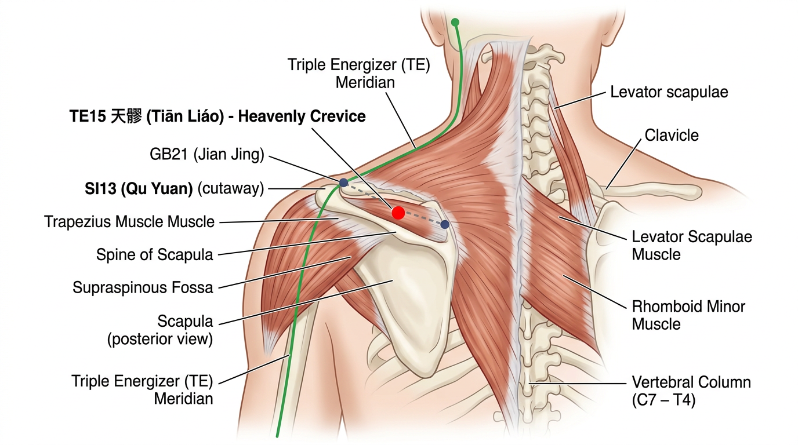
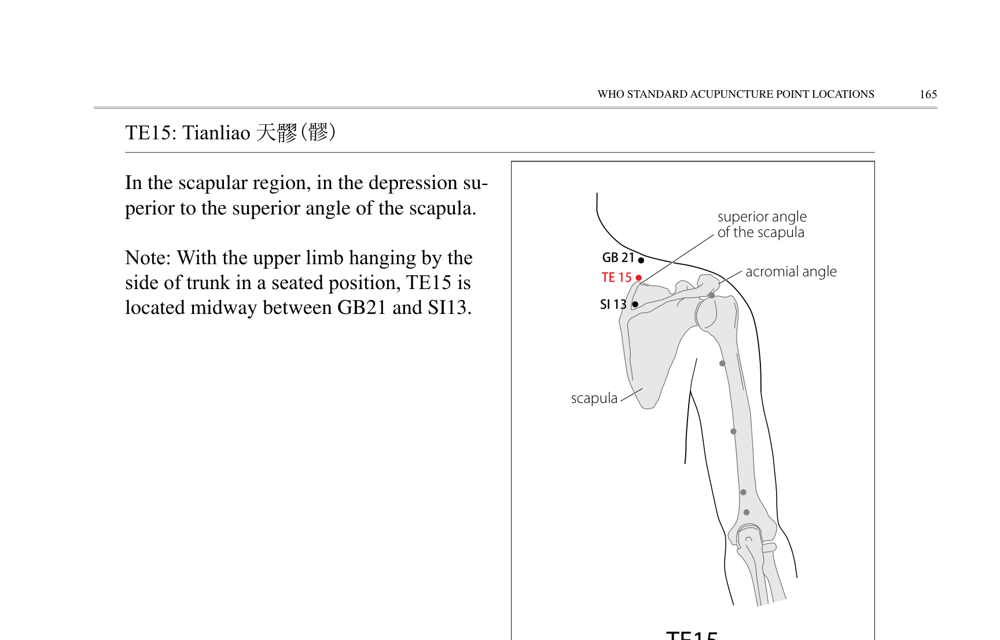
External References: AcuPoints
מיקום אנטומי: באמצע הקו בין GB21 (ג'יאן ג'ינג) ל-SI13 (צ'יו יואן), על שריר הסופרספינטוס, מעל לפוסה הסופרספינטית.
איך למצוא את הנקודה:
- מצאו את GB21 (באמצע הקו בין C7 לאקרומיון)
- מצאו את SI13 (על השפה המדיאלית של הספינה של השכמית)
- הנקודה נמצאת בדיוק באמצע בין השתיים
- על הפוסה הסופרספינטית של השכמית
עומק דקירה: 0.5-0.8 צון
זווית דקירה: ניצבת או אובליקית
תחושת דה-צ'י: כאב מקומי, תחושת כבדות בכתף
פעולות והתוויות:
- מפעילה את הערוץ ומשחררת כאב
- מפזרת רוח-לחות
- התוויות: כאב בכתף ובצוואר, נוקשות צוואר, כאב בזרוע
שילובי נקודות נפוצים:
- TE15 + GB21 — לכאב בכתף ובצוואר
- TE15 + SI11 — לכאב באזור השכמה
TE16 — טיאן יו — Tiān Yǒu — "חלון שמיים"¶
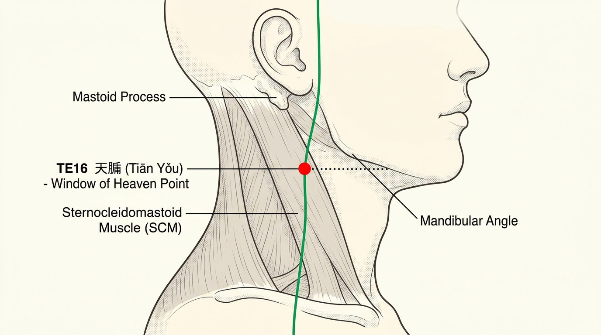
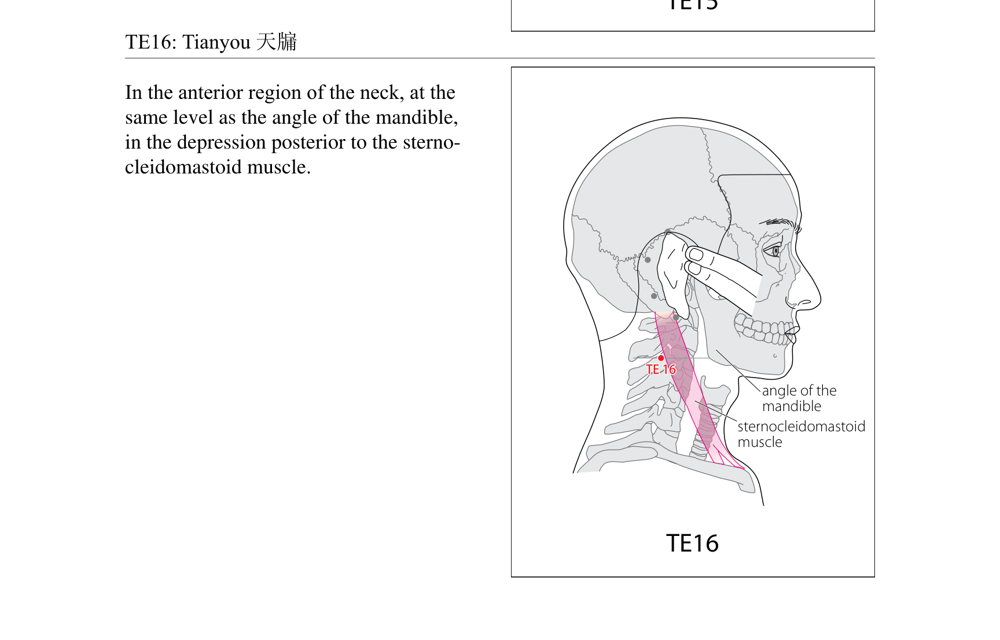
External References: AcuPoints
קטגוריה מיוחדת: נקודת חלון השמיים
מיקום אנטומי: בצד האחורי-לטרלי של הצוואר, מאחורי ומתחת לתהליך המסטואידי, על השפה האחורית של שריר הסטרנוקלידומסטואיד (SCM), בגובה זווית הלסת.
איך למצוא את הנקודה:
- מצאו את התהליך המסטואידי (הבליטה מאחורי האוזן)
- החליקו ממנו כלפי מטה ואחורה
- הנקודה נמצאת על השפה האחורית של שריר ה-SCM
- בגובה זווית הלסת התחתונה (מנדיבולה)
- בשקע שמאחורי שריר ה-SCM
עומק דקירה: 0.5-1 צון
זווית דקירה: ניצבת או אובליקית קדימה
תחושת דה-צ'י: כאב מקומי, תחושת כבדות
פעולות והתוויות:
- מועילה לעיניים ולאוזניים
- מפזרת רוח, מפתחת את חושי הראש
- התוויות: כאב ראש, נוקשות צוואר, טינטון, חירשות, טשטוש ראיה, נפיחות בפנים, חירשות פתאומית
שילובי נקודות נפוצים:
- TE16 + GB20 — לנוקשות צוואר וכאב ראש
- TE16 + SI19 — לבעיות שמיעה
TE17 — יי פנג — Yì Fēng — "מגן רוח"¶
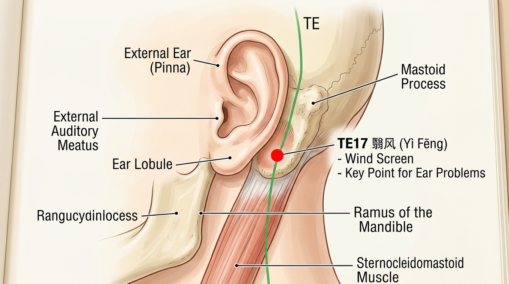
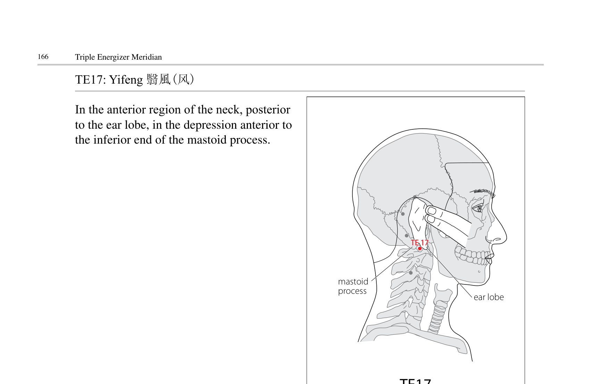
External References: AcuPoints
מיקום אנטומי: בשקע שמאחורי תנוך האוזן (lobule), בין התהליך המסטואידי לענף הלסת התחתונה (ramus of mandible).
איך למצוא את הנקודה:
- מצאו את תנוך האוזן
- החליקו מאחורי התנוך לשקע
- הנקודה נמצאת בשקע שבין התהליך המסטואידי לענף הלסת
- לחצו — השקע ברור ורגיש
עומק דקירה: 0.5-1 צון
זווית דקירה: ניצבת או אובליקית לכיוון קדמי-מדיאלי
תחושת דה-צ'י: כאב מקומי, לעיתים תחושת נימול באוזן או בצד הפנים
פעולות והתוויות:
- נקודה מרכזית לטיפול בבעיות אוזניים
- מפזרת רוח, מועילה לאוזניים ולמפרק הלסת
- מפעילה את מחזור הדם באזור
- התוויות: טינטון, חירשות, כאב אוזניים, דלקת אוזן תיכונה, שיתוק פנים (Bell's palsy), כאב בלסת (TMJ), בלוטות פרוטיד נפוחות (חזרת)
שילובי נקודות נפוצים:
- TE17 + SI19 + GB2 — לטיפול מקיף בבעיות אוזניים
- TE17 + ST6 + ST7 — לכאב בלסת (TMJ)
- TE17 + LI4 + ST4 — לשיתוק פנים
TE18 — צ'י מאי — Chì Mài — "כלי העווית"¶
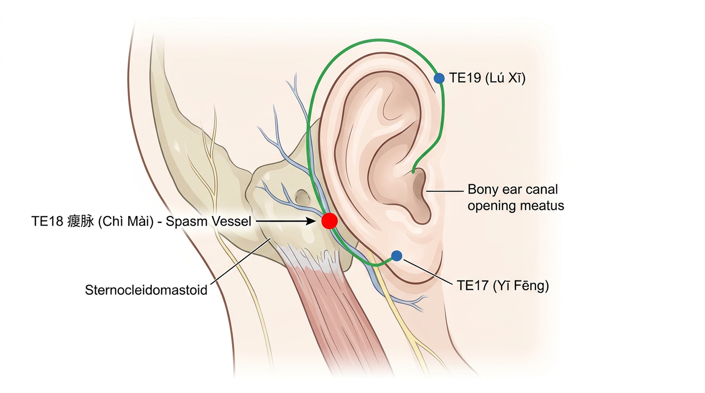
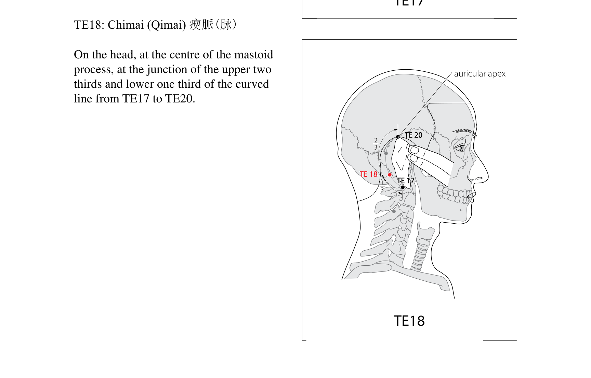
External References: AcuPoints
מיקום אנטומי: מאחורי האוזן, במרכז התהליך המסטואידי, בגובה פתח האוזן, על הוריד שמאחורי האוזן.
איך למצוא את הנקודה:
- מצאו את התהליך המסטואידי (הבליטה מאחורי האוזן)
- הנקודה נמצאת על התהליך עצמו, בין TE17 לבין TE19
- בגובה פתח תעלת האוזן
- ניתן למשש וריד קטן באזור
עומק דקירה: 0.1-0.2 צון (או הקזה — דקירה עם מחט שלוש-קצוות)
זווית דקירה: שטוחה או הקזה
תחושת דה-צ'י: כאב חד מקומי
פעולות והתוויות:
- מפזרת רוח, מנקה חום
- מועילה לאוזניים ולראש
- התוויות: כאב ראש, טינטון, חירשות, כאב אוזניים, עוויתות בילדים, הקאות, שלשולים
שילובי נקודות נפוצים:
- TE18 + TE17 — לכאב אוזניים
- TE18 + GB20 — לכאב ראש
TE19 — לו שי — Lú Xī — "מנוחת הגולגולת"¶
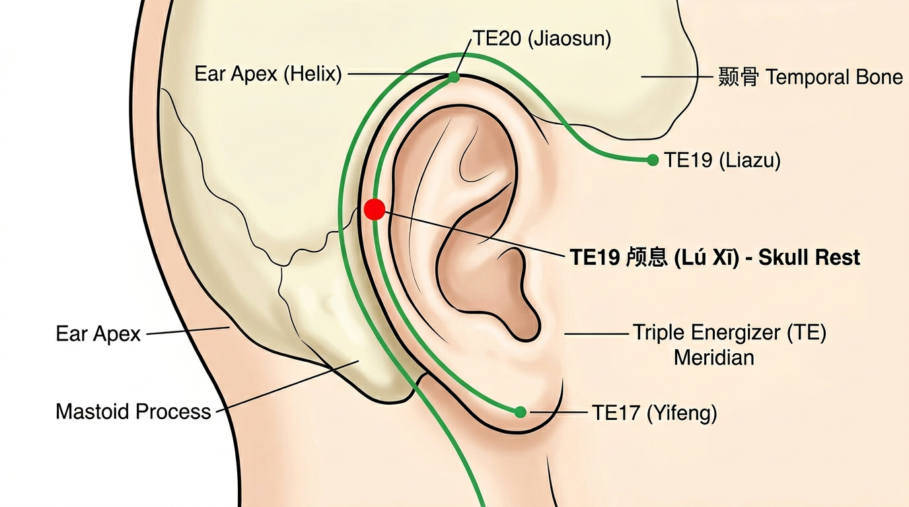
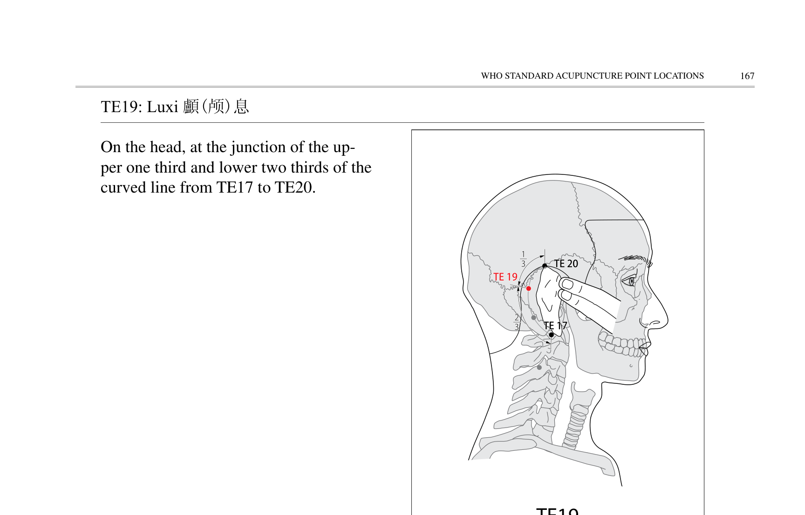
External References: AcuPoints
מיקום אנטומי: מאחורי האוזן, בגובה הגבול העליון של האוזן, על התהליך המסטואידי.
איך למצוא את הנקודה:
- מצאו את הקצה העליון של האוזן (apex)
- ישירות מאחורי הקצה העליון, על התהליך המסטואידי
- הנקודה נמצאת בשליש העליון של הקו שבין TE17 ל-TE20
עומק דקירה: 0.1-0.3 צון (שטוחה)
זווית דקירה: שטוחה כלפי מטה
תחושת דה-צ'י: כאב מקומי
פעולות והתוויות:
- מפזרת רוח, משחררת כאב
- מועילה לאוזניים
- התוויות: כאב ראש, טינטון, כאב אוזניים, עוויתות בילדים
שילובי נקודות נפוצים:
- TE19 + GB8 — לכאב ראש צידי
- TE19 + TE17 — לטינטון
TE20 — ג'יאו סון — Jiǎo Sūn — "זווית האוזן"¶
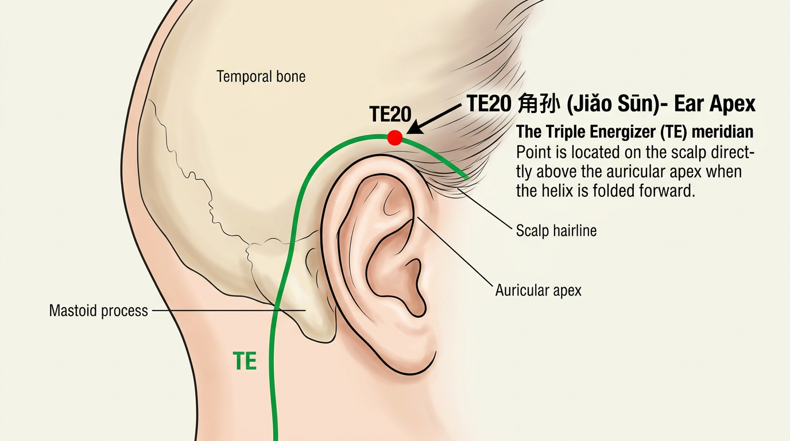
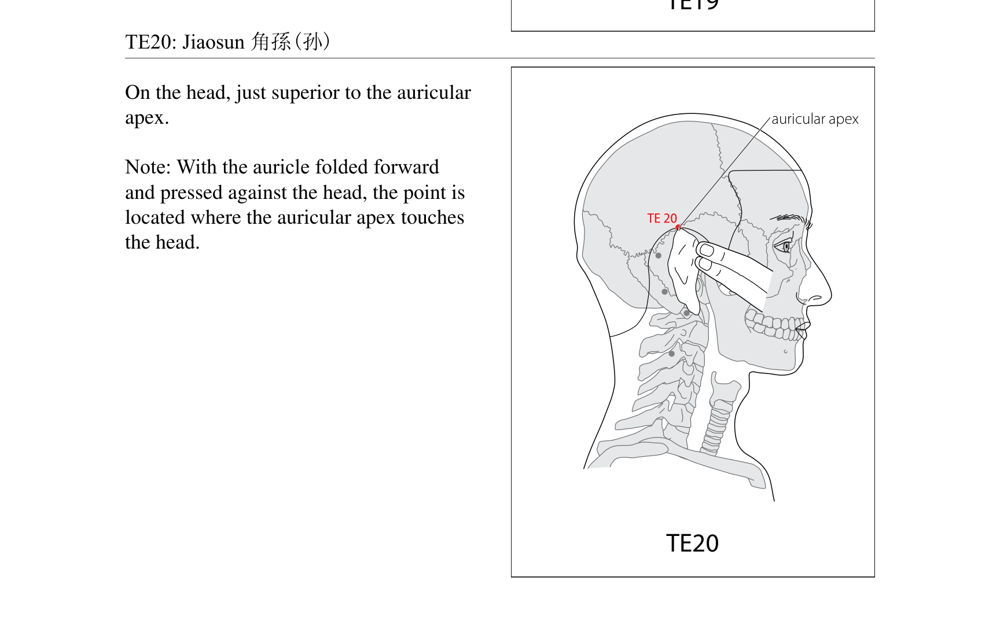
External References: AcuPoints
מיקום אנטומי: מעל לקצה העליון של האוזן (apex), כאשר האוזן מקופלת קדימה.
איך למצוא את הנקודה:
- קפלו את האוזן קדימה
- מצאו את הנקודה הגבוהה ביותר של האוזן (apex)
- הנקודה נמצאת ישירות מעל, על הקרקפת, בקו השיער
עומק דקירה: 0.1-0.3 צון (שטוחה)
זווית דקירה: שטוחה כלפי מטה
תחושת דה-צ'י: כאב מקומי
פעולות והתוויות:
- מפזרת רוח-חום
- מועילה לאוזניים ולעיניים
- מפחיתה נפיחות
- התוויות: כאב ראש צידי, כאב אוזניים, דלקת חניכיים, נפיחות בלחי, טשטוש ראיה, נוקשות צוואר
שילובי נקודות נפוצים:
- TE20 + ST6 — לכאב שיניים ונפיחות בלחי
- TE20 + GB8 — לכאב ראש צידי
TE21 — אר מן — Ěr Mén — "שער האוזן"¶
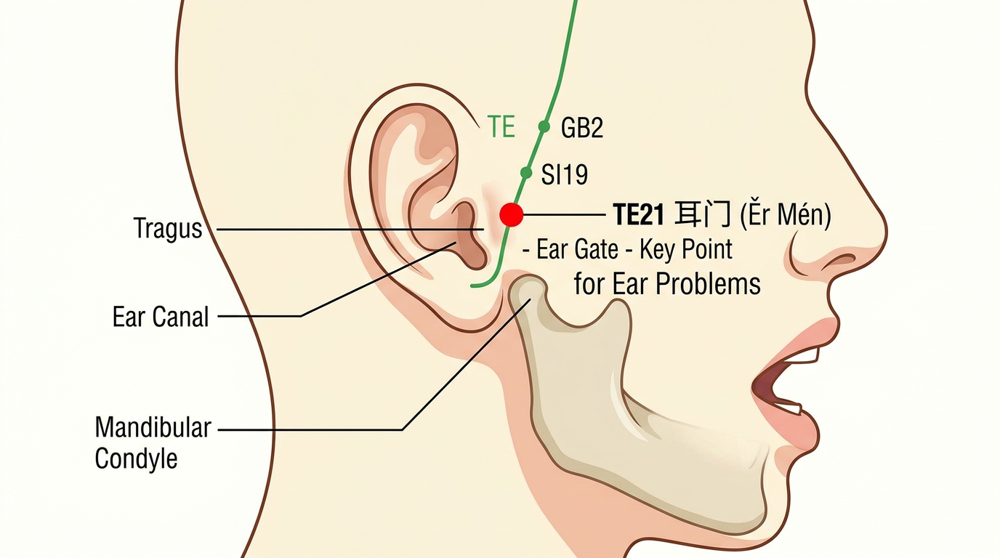
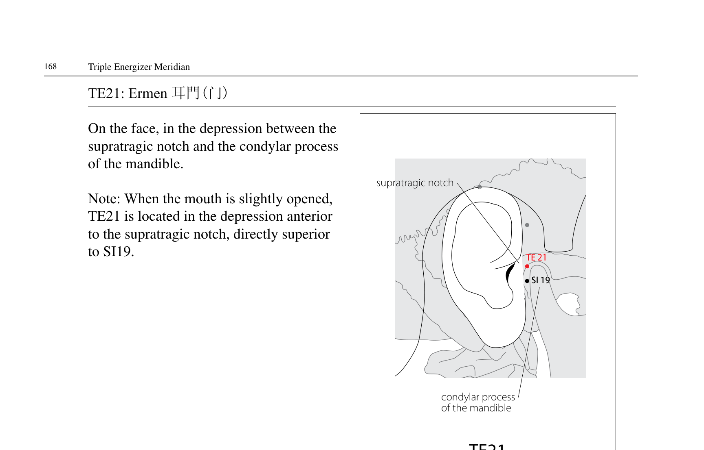
External References: AcuPoints
מיקום אנטומי: בשקע שלפני הטראגוס (הבליטה שמלפני תעלת האוזן), כאשר הפה פתוח, מעל לקונדיל של הלסת התחתונה.
איך למצוא את הנקודה:
- בקשו מהמטופל לפתוח את הפה
- מצאו את הטראגוס (הבליטה שמלפני פתח האוזן)
- הנקודה נמצאת בשקע שנוצר מעל הקונדיל של הלסת כאשר הפה פתוח
- מעל ל-SI19 (ממש מעל ל-SI19 וקדמי ל-GB2)
עומק דקירה: 0.5-1 צון
זווית דקירה: ניצבת (90°) כאשר הפה פתוח
תחושת דה-צ'י: כאב מקומי, תחושת סתימות באוזן
פעולות והתוויות:
- נקודה מרכזית לטיפול בבעיות אוזניים
- מועילה לשמיעה, פותחת את האוזניים
- מפזרת רוח-חום
- התוויות: טינטון, חירשות, כאב אוזניים, דלקת אוזן, הפרשות מהאוזן, כאב שיניים, כאב בלסת (TMJ)
שילובי נקודות נפוצים:
- TE21 + SI19 + GB2 — "שלוש נקודות האוזן" — לכל בעיות האוזניים
- TE21 + TE17 — לטינטון
- TE21 + ST7 — לכאב במפרק הלסת
TE22 — הא ליאו — Hé Liáo — "שקע הרמוניה"¶
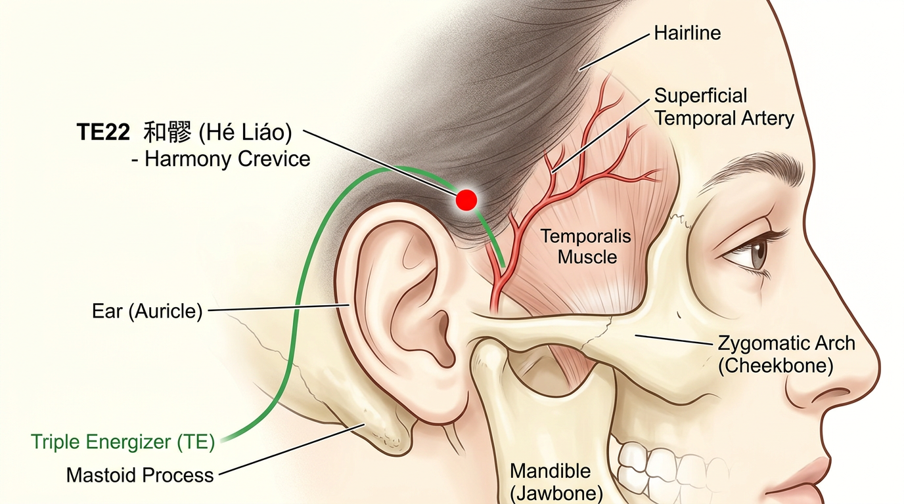
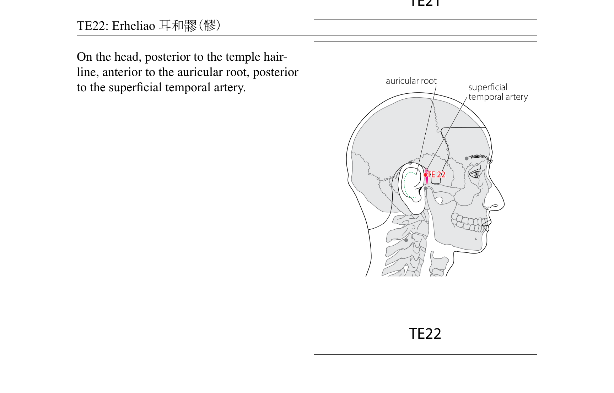
External References: AcuPoints
מיקום אנטומי: לפני האוזן, אחורית לעורק הטמפורלי השטחי, בגובה שורש הזיגומה (עצם הלחי), בגבול האחורי של קו השיער.
איך למצוא את הנקודה:
- מצאו את העורק הטמפורלי השטחי (ניתן למשש פעימות מלפני האוזן)
- הנקודה נמצאת מאחורי העורק
- בגובה שורש עצם הזיגומה (עצם הלחי)
- בגבול האחורי של קו השיער
עומק דקירה: 0.3-0.5 צון
זווית דקירה: שטוחה או אובליקית (להימנע מהעורק)
תחושת דה-צ'י: כאב מקומי
פעולות והתוויות:
- מפזרת רוח, מפעילה את הערוץ
- מועילה לאוזניים ולצד הראש
- התוויות: כאב ראש צידי, טינטון, לסת נעולה (טריסמוס), שיתוק פנים, כאב באזור הרקה
שילובי נקודות נפוצים:
- TE22 + GB8 — לכאב ראש צידי
- TE22 + ST6 — ללסת נעולה
TE23 — סי ג'ו קונג — Sī Zhú Kōng — "חלל משי הבמבוק"¶
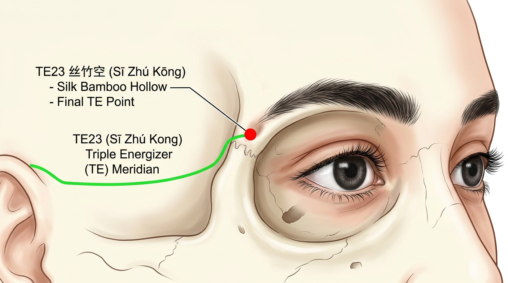
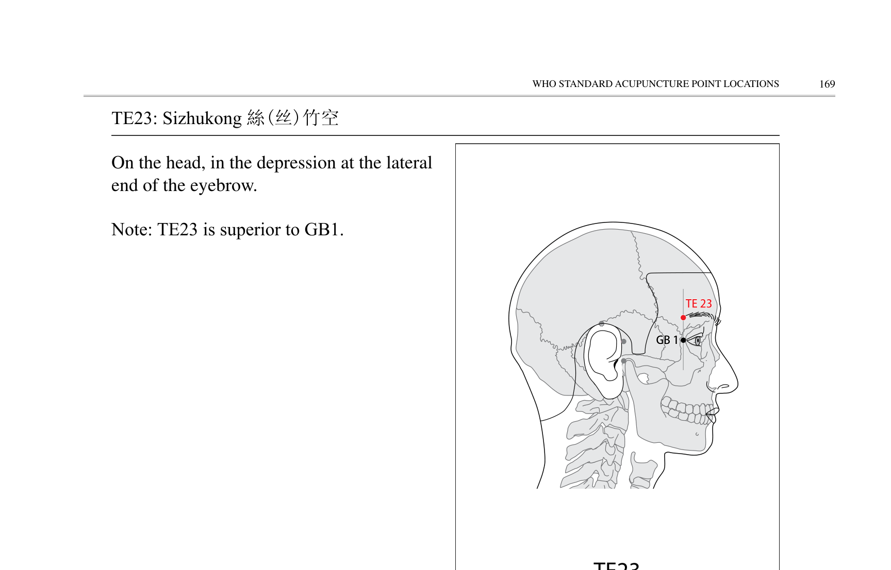
External References: AcuPoints
מיקום אנטומי: בשקע שבקצה הלטרלי (חיצוני) של הגבה.
איך למצוא את הנקודה:
- מצאו את הקצה החיצוני של הגבה
- הנקודה נמצאת בשקע שבקצה הגבה
- לחצו — תרגישו שקע רגיש בעצם הגבה
עומק דקירה: 0.3-0.5 צון
זווית דקירה: שטוחה לכיוון אחורי או מטה (לא לדקור ניצבת — סמוך לעין)
תחושת דה-צ'י: כאב מקומי, תחושת מתיחה סביב העין
פעולות והתוויות:
- מפזרת רוח, מועילה לעיניים
- משחררת כאב ראש ומיגרנה
- התוויות: כאב ראש, מיגרנה, כאב בעיניים, אדמומיות בעיניים, עוויתות בעפעף, שיתוק פנים, אפילפסיה
שילובי נקודות נפוצים:
- TE23 + GB1 — לכאב בעיניים ובעיות ראיה
- TE23 + Taiyang (נקודה חוץ-ערוצית) — למיגרנה וכאב ראש צידי
- TE23 + GB14 — לכאב מעל העיניים
4. סיכום נקודות מפתח של ערוץ שלוש המבערות¶
4.1 נקודות חשובות ביותר¶
| נקודה | שם | חשיבות |
|---|---|---|
| TE3 | ג'ונג ג'ו | נקודת שו, מפתח לדאי מאי עם GB41, אוזניים |
| TE5 | וואי גואן | נקודת לואו + 8 מפגש, פיזור רוח-חום, כאב |
| TE6 | ג'י גו | נקודת מפתח לעצירות |
| TE14 | ג'יאן ליאו | כאב כתף |
| TE17 | יי פנג | נקודת מפתח לבעיות אוזניים |
| TE21 | אר מן | שער האוזן, שמיעה |
4.2 נקודות חמשת האלמנטים¶
| אלמנט | נקודה | סוג |
|---|---|---|
| מתכת | TE1 | ג'ינג-באר |
| מים | TE2 | יינג-מעיין |
| עץ | TE3 | שו-זרם |
| אש | TE6 | ג'ינג-נהר |
| אדמה | TE10 | הא-ים |
4.3 נקודות מיוחדות¶
| קטגוריה | נקודה |
|---|---|
| נקודת יואן | TE4 |
| נקודת לואו | TE5 |
| נקודת שי | TE7 |
| 8 נקודות מפגש | TE5 (יאנג ווי מאי) |
5. תרגילים¶
- שרטטו את מסלול ערוץ שלוש המבערות על גוף שותף ללימודים וסמנו את כל 23 הנקודות.
- תרגלו איתור TE3, TE5, TE6, TE14, TE17, TE21 בעיניים עצומות.
- הסבירו את תפקידן של שלוש המבערות ואת ההבדל בין המבערה העליונה, האמצעית והתחתונה.
- כתבו מרשם נקודות לטיפול ב: (א) טינטון עם חירשות, (ב) כאב כתף לטרלי, (ג) עצירות כרונית.
ניווט¶
- הקודם: ערוץ קרום הלב (PC) | הבא: ערוץ כיס המרה (GB)
- זוג פנים-חוץ: ערוץ קרום הלב (PC) — ערוץ הין הזוגי (אלמנט אש שרת)
- חזרה למודול: [מודול 2 — מרידיאנים]
- ראה גם: דפוסי שלוש המבערות